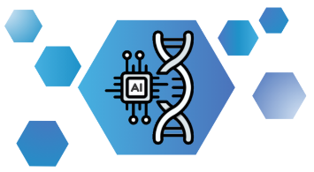

How was the course? Your feedback helps us improve the next edition.
Give feedbackProgram
- Morning coffee
- Introduction to AI and the Use of Large Language Models for Research Ole Winther
- How LLMs Work: The Transformer Architecture Open slides Download HTML, 1.9 MB
- Coffee break
- Security, Privacy and Deployment Options Diana Andrejeva
- Risks, ethics and trade-offs of AI Suze Roostee Download PowerPoint, 9.7 MB
- Lunch
- Hallucinations, Limitations and Critical Evaluation Alba Refoyo Martínez Download PDF, 2.0 MB
- LLMs for Literature Search, Summarization and Ideation Stefano Pupe Open slides Download HTML, 7.6 MB
- Coffee break
- AI for Programming Stefano Pupe Open slides Download HTML, 17.4 MB
- Discussion: Trends, Predictions and Expectations
Next edition of this course
29–30 April 2027
Coming up this autumn
- Bulk RNAseq
- 26–29 October
- Python II
- 2–4 November
- GWAS
- 9–12 November
Consulting
Free consultations ranging from data analysis to information security questions. We are starting to advise on AI models.